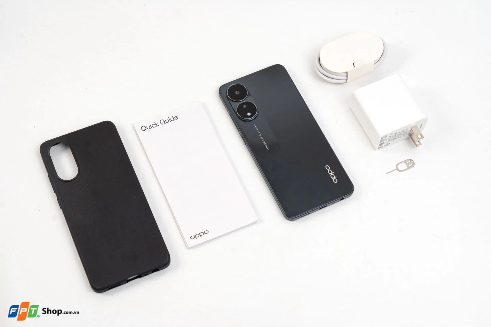

    <!-------------------------------------------blog--------------------------------------------------->
<section class="blog-details">
    <div class="container">
        <div class="blog-details-area">
            <div class="blog-details-img">
                
            </div>  
            <div class="blog_entry_content">
                <p>First, open the OPPO A78 box, you will immediately have a "genuine" accessory set. Why do I say that? Because accessories include a USB-C cable, a case, a SIM stick and especially a 67W fast charger. If with some other products, you will lack a charger, the OPPO A78 comes with fast charging up to 67W. You need to buy almost no additional accessories and can start using your phone right away.</p>
                <p>In terms of design, OPPO A78 possesses a modern square appearance, covered with a rough layer to bring a trendy beauty. The device is thin and light, weighing only 180g and 7.93mm thick.</p>            
                <p>OPPO A78 camera cluster is changed compared to its predecessor OPPO A77s and resembles OPPO Reno8T. The camera cluster design has two large circles to accommodate the sensors, for a modern and impressive overall. This camera cluster contains 2 sensors, a 50MP main camera and a 2MP depth camera.</p>
                <p class="blockquote">The special feature of the screen also comes from high-end fingerprint unlocking, fast and secure. The point worth noting is the memory, if you are in need of a "huge" memory phone in the price range, choosing OPPO A78 is ideal. The device has up to 256GB ROM memory for you to store comfortably without the need for cloud storage or having to delete photos, videos, and applications frequently.</p>
                <p>In terms of physical ports, OPPO A78 is fully equipped and streamlined, convenient for all user operations.</p>
                <p>Now let's explore together about the most outstanding feature of OPPO A78 which is fast charging. The device supports fast charging capacity of 67W - leading in the segment. You only need 15 minutes to have 43% immediately to resume all activities and 45 minutes to reach 100% battery. It can be said that this is a very convenient support, because you will not spend too much time on charging the battery.</p>
                <p>Overall, after a quick review of OPPO A78, I think this is a phone that balances design and convenience, "multi-function" - meets the "multi Z phone" standard for Gen. Z. The machine has a beautiful youthful appearance and fashionable colors. Comes with practical features such as 67W fast charging or large memory, smooth multitasking, comfortable storage.</p>
            </div>
        </div>
    </div>
</section>
    <!----------------------------------------end-blog------------------------------------------>